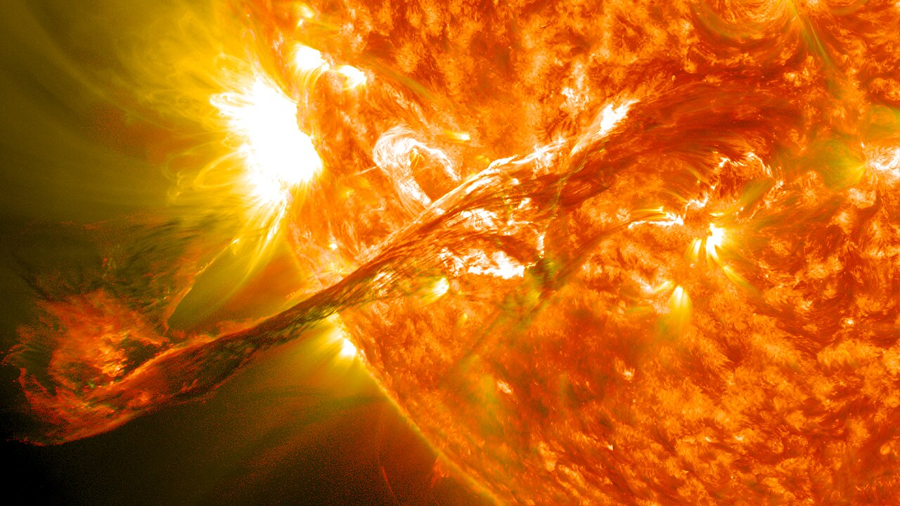

AURORA BOREALIS
A Beautiful Mystery in the Sky
For all of human existence, people have marveled in wonder at
dancing lights in the sky.
We now know a great deal about the aurora and why it occurs —
but many beautiful mysteries remain.
Which of these do you think affects where or when you see an aurora? Take a guess! Select all that apply, then reveal the answers.
The Sun constantly streams charged particles into space — the solar wind. It never stops, even on the calmest days.

But some days it erupts. A coronal mass ejection (CME) hurls a billion-ton cloud of magnetized plasma toward Earth. That's when the sky tends to come alive.
Both behaviors rise and fall together on the Sun's roughly 11-year cycle — long stretches of "quiet Sun," and stretches of "stormy Sun" with frequent flares and CMEs.
The Sun's activity rises and falls on a cycle roughly 11 years long.
Tap a card, then tap the bucket where it belongs.
The magnetosphere deflects almost all the solar wind — like a vast invisible shield. But at the poles, magnetic field lines converge and funnel inward. Those are the entry points.
Electricity through gas makes colored light — that's all a neon sign is. Same physics. Just on a planetary scale: the Sun supplies the electricity, and Earth's atmosphere supplies the gas.
One charged particle leaves the Sun's surface, crosses millions of miles of solar wind, meets Earth's magnetosphere, funnels down at the pole, and collides with the atmosphere over Tromsø — where it glows.
The aurora follows a ring called the auroral oval, centered on Earth's magnetic pole — not the geographic North Pole. Tromsø, Reykjavík, and Fairbanks all sit inside or near this ring. Detroit and Glasgow sit well below it — which matters a great deal for forecasting.
Tap the spots where charged particles can funnel into Earth's atmosphere. 0 of 2 found
The aurora is a live readout of Earth's layered atmosphere. Oxygen at 100 km glows green. Oxygen higher up glows red. Nitrogen traces the lower edges in blue and purple. Every color you see has an address in the sky.
The aurora isn't one flat curtain — it's light coming from a whole range of heights above the ground, roughly 80 km to 300 km up. For reference, a commercial jet cruises around 10 km. The aurora happens far above that, at the edge of space.
The higher you go, the thinner the air gets. Near the bottom of that range the atmosphere still has some substance to it. Near the top, it's almost a vacuum — molecules are spaced so far apart that collisions become rare.
The particles raining down from Earth's magnetosphere don't all carry the same amount of energy. That energy decides how far each one travels before it finally collides with a gas molecule and gives up its light.
High-energy particles punch all the way down into the denser lower atmosphere before they run out of steam — that's the "lower edge" of the aurora, where the air is thick enough to be mostly nitrogen. Low-energy particles stop much higher up, where the air is so thin that an excited oxygen atom can sit for minutes before bumping into anything — just long enough for its slow red glow to escape.
Drag the gas labels onto the color bands in a real aurora photograph.
Why is the aurora so hard to predict? Not one reason — three. Each operates on a completely different timescale.
When a coronal mass ejection leaves the Sun, it takes 1–3 days to reach Earth. But arrival time is uncertain by ±12 hours — even with the best space weather models.
Worse: the factor that matters most — the Bz componentThe north–south direction of the CME's own magnetic field. South-pointing Bz links efficiently with Earth's field and drives strong auroras. North-pointing Bz mostly fizzles, no matter how big the CME is. of the CME's magnetic field — can't be measured until the cloud nearly arrives. South-pointing Bz means strong coupling with Earth's field, which means aurora. North-pointing Bz? Barely anything happens.
You can watch for days in anticipation. Then nothing. Or get almost no warning and see the show of a lifetime.
The Kp index (0–9) is the number everyone watches. Most people read it as an intensity forecast. It isn't.
Kp measures how far south the auroral oval expands. Kp 7 means the oval has stretched to reach Glasgow or Detroit. That's all it says.
Local magnetometer · H-componentThe horizontal strength of Earth's magnetic field at a location. A sudden swing signals that a substorm is underway nearby.
Energy builds in Earth's magnetotail for 1–3 hours, then releases explosively. The aurora suddenly brightens and dances. A spiking magnetometer is your best real-time signal.
You know which signal to watch for your latitude. But seeing an aurora takes more than the right number on a screen. You also need real darkness, skies away from city lights, and a little patience for wherever the ~11-year solar cycle happens to be right now.
Solar activity rises and falls on that cycle. Near its peak, chances come often. Near its low point, you'll need to watch more closely for the rarer active nights. Check a current space-weather source (like NOAA SWPC) to see where the cycle stands before you plan a trip.
Four scenarios. A simulated space weather briefing for each.
You decide: do conditions favor an aurora tonight?
This is where everything comes together.